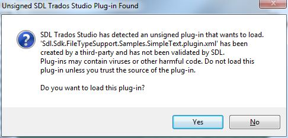
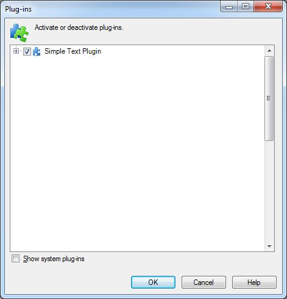

Build the file type plug-in
This article explains how to build a file type plug-in and how Trados Studio packages it.
The plug-in package
When you build the project, Visual Studio generates an .sdlplugin file. In this example, the output file is Sdl.Sdk.FileTypeSupport.Samples.SimpleText.sdlplugin. The build places that file in your output folder.
An .sdlplugin file is a ZIP archive that contains the plug-in components, such as the plug-in assembly, resources file, and manifest. In this example, the package contains the following files:
- The plug-in assembly, for example
Sdl.Sdk.FileTypeSupport.Samples.SimpleText.dll. - The plug-in manifest, for example
Sdl.Sdk.FileTypeSupport.Samples.SimpleText.plugin.xml. The build process generates this manifest. It lists the extension classes in the plug-in and declares the assembly and extension classes to Trados Studio. If you delete this.xmlfile, Trados Studio no longer loads the plug-in. - The plug-in resources file, for example
Sdl.Sdk.FileTypeSupport.Samples.SimpleText.plugin.resources. This file contains the localizable strings and images referenced in the plug-in manifest. The build compiles it fromPluginResources.resx. For more information, see The Resources File.
The plug-in package path
For Trados Studio to detect and extract the plug-in package, the following folders must exist:
%AppData%\Trados\Trados Studio\19\Plugins\Packages\%AppData%\Trados\Trados Studio\19\Plugins\Unpacked\
Place the .sdlplugin file in the Packages subfolder, and then start Trados Studio. During startup, Trados Studio automatically extracts the package contents to the Unpacked subfolder.
The package folder does not need to match your build output path, but using it as the build output path is convenient because the build writes the .sdlplugin file directly to the required location. After you create the plug-in from the empty template, you can already build the project, although it will not provide any functionality yet.
When Trados Studio starts, it loads the unpacked plug-in and displays the following message. Click Yes to load the plug-in. Trados Studio shows this message for plug-ins that RWS has not certified and that could therefore be unsafe. You can avoid this prompt by submitting your plug-in to RWS for certification.

Note
If a user clicks No when Trados Studio displays the plug-in security message during startup, the application does not load the plug-in.
After Trados Studio loads the plug-in, open Tools > Plug-ins to confirm that the application added it. The Plug-ins dialog box should list your new plug-in:

The plug-in manifest
The plug-in package requires a manifest file named pluginpackage.manifest.xml. The project template includes this file. If the manifest is missing, the build cannot create the plug-in package.
The following example shows the manifest for the sample plug-in:
<?xml version="1.0" encoding="utf-8"?>
<PluginPackage xmlns="http://www.sdl.com/Plugins/PluginPackage/1.0">
<PlugInName>Sdl.Sdk.FileTypeSupport.Samples.SimpleText</PlugInName>
<Version>1.0</Version>
<Description>Sdl.Sdk.FileTypeSupport.Samples.SimpleText</Description>
<Author></Author>
<RequiredProduct name="TradosStudio" minversion="19.0" />
</PluginPackage>
The manifest contains the following elements:
- PlugInName: Specifies the friendly name of the plug-in. This value can differ from the plug-in name defined in
PluginResources.resxbecause one plug-in package can theoretically contain multiple plug-ins. - Version: Specifies the version of the plug-in package. Trados Studio uses this value to detect package updates during startup.
- Description: Describes the plug-in package.
- Author: Identifies the plug-in developer.
- RequiredProduct: Specifies the RWS product version required to run the plug-in. You must provide a minimum version, and you can optionally provide a maximum version.
Build and debug suggestions
Use the following suggestions to simplify building and debugging your plug-in:
- Configure the solution and project to start Trados Studio by default.
- Configure the project output path to the Trados Studio plug-in package directory. This setting deploys your plug-in automatically. %AppData%\Trados\Trados Studio\19\Plugins\Packages\ stores the package directory path.
- Delete the previous unpacked version of your plug-in during the build. This step ensures that Trados Studio uses the latest version. You can do this with a post-build event.
rmdir /S /Q "%AppData%\Trados\Trados Studio\19\Plugins\Unpacked\ \Sdl.Sdk.FileTypeSupport.Samples.Bil"
See also
Note
This content may be out-of-date. To check the latest information on this topic, inspect the libraries using the Visual Studio Object Browser.